Crashlytics

Firebase Crashlytics is a lightweight, real-time crash reporter that helps you track, prioritize, and fix stability issues that erode your app quality. Crashlytics saves you troubleshooting time by intelligently grouping crashes and highlighting the circumstances that lead up to them. Find out if a particular crash is impacting a lot of users. Get alerts when an issue suddenly increases in severity. Figure out which lines of code are causing crashes. All this information gets delivered to you through the online Firebase Console. Crashlytics also easily integrates into your Android, iOS, macOS, tvOS, and watchOS apps. Check the official page for more information.
Setup
Before starting to use any Firebase extensions, you are required to follow some general configuration steps; however the Crashlytics extension has some specific requirements which you can read in the pages below:
Functions
The following functions are given for working with Firebase Crashlytics extension:
- FirebaseCrashlytics_Crash
- FirebaseCrashlytics_CrashlyticsCollectionEnabled_Check
- FirebaseCrashlytics_CrashlyticsCollectionEnabled_Set
- FirebaseCrashlytics_DidCrashOnPreviousExecution
- FirebaseCrashlytics_Log
- FirebaseCrashlytics_RecordException
- FirebaseCrashlytics_SetCustomKey
- FirebaseCrashlytics_SetUserIdentifier
- FirebaseCrashlytics_UnsentReports_Check
- FirebaseCrashlytics_UnsentReports_Delete
- FirebaseCrashlytics_UnsentReports_Send
FirebaseCrashlytics_Crash
This function throws an error that crashes the app and creates a fatal report to be sent to Crashlytics server. A crash created using this function can be tracked during the next application execution using the method FirebaseCrashlytics_DidCrashOnPreviousExecution.
Warning
This function needs to be called at least once to enable Crashlytics for the first time.
Syntax:
FirebaseCrashlytics_Crash(errorMessage)
| Argument | Type | Description |
|---|---|---|
| errorMessage | String | The error message to report (this will be a fatal report). |
Returns:
N/A
Example:
FirebaseCrashlytics_Crash("Test Crash");exception_unhandled_handler(function(_exception) {
var _info = json_stringify(_exception);
FirebaseCrashlytics_Crash(_info);
show_debug_message(_info);
});FirebaseCrashlytics_CrashlyticsCollectionEnabled_Check
This function returns whether automatic data collection is enabled or not. The function uses two ways to check whether automatic data collection is enabled, in order of priority:
- If FirebaseCrashlytics_CrashlyticsCollectionEnabled_Set was called, uses its value.
- If the
FirebaseCrashlyticsCollectionEnabledkey is in your app'sInfo.plist, uses that.
Warning
This function is only available on iOS targets.
Syntax:
FirebaseCrashlytics_CrashlyticsCollectionEnabled_Check()
Returns:
Example:
if (FirebaseCrashlytics_CrashlyticsCollectionEnabled_Check())
{
FirebaseCrashlytics_CrashlyticsCollectionEnabled_Set(false);
}FirebaseCrashlytics_CrashlyticsCollectionEnabled_Set
This function is used to enable or disable the automatic data collection configuration for Crashlytics. If this is set, it overrides any automatic data collection settings configured in the extension options as well as any Firebase-wide settings.
If automatic data collection is disabled for Crashlytics, crash reports are stored on the device. To check for unsent reports, use the FirebaseCrashlytics_UnsentReports_Check function. Use FirebaseCrashlytics_UnsentReports_Send to upload existing reports when automatic data collection is disabled. Use FirebaseCrashlytics_UnsentReports_Delete to delete any reports stored on the device without sending them to Crashlytics.
Syntax:
FirebaseCrashlytics_CrashlyticsCollectionEnabled_Set(enabled)
| Argument | Type | Description |
|---|---|---|
| enabled | Boolean | Whether to enable automatic data collection. |
Returns:
N/A
Example:
if (FirebaseCrashlytics_CrashlyticsCollectionEnabled_Check())
{
FirebaseCrashlytics_CrashlyticsCollectionEnabled_Set(false);
}FirebaseCrashlytics_Log
This function logs a message that is included in the next fatal or non-fatal report. Logs are visible in the session view on the Firebase Crashlytics console. Newline characters are stripped and extremely long messages are truncated. The maximum log size is 64k. If exceeded, the log rolls such that messages are removed, starting from the oldest.
Syntax:
FirebaseCrashlytics_Log(message)
| Argument | Type | Description |
|---|---|---|
| message | String | The message to be logged. |
Returns:
N/A
Example:
FirebaseCrashlytics_Log("Entered the " + room_get_name(room) + " room");FirebaseCrashlytics_RecordException
Records a non-fatal report to send to Crashlytics. Non-fatal reports are manually thrown by the developer and may not represent crashes that occurred during code execution.
Syntax:
FirebaseCrashlytics_RecordException(errorMessage)
| Argument | Type | Description |
|---|---|---|
| errorMessage | String | Error message to include in the report. |
Returns:
N/A
Example:
switch (characterClass)
{
case "hero":
// Do something
break;
case "enemy":
// Do something else
break;
default:
// There are no more classes, so we shouldn't be hitting this line
FirebaseCrashlytics_RecordException("characterClass has an unknown value of :" + characterClass);
break;
}characterClass) is expected to only be equal to either "hero" or "enemy". If it happens to be none of these then we might want to report this even though it's not a fatal error.
FirebaseCrashlytics_SetCustomKey
This function sets a custom key-value pair that is associated with subsequent fatal and non-fatal reports. Calling this function with an existing key will simply update the value for that key. The value of any key at the time of a fatal or non-fatal event is associated with that event. Keys and associated values are visible in the session view on the Firebase Crashlytics console.
Crashlytics supports a maximum of 64 key/value pairs. New keys beyond that limit are ignored. Keys or values that exceed 1024 characters are truncated.
Syntax:
FirebaseCrashlytics_SetCustomKey(key, value)
| Argument | Type | Description |
|---|---|---|
| key | String | A unique key. |
| value | Real or String | The value to be associated with the given key. |
Returns:
N/A
Example:
FirebaseCrashlytics_SetCustomKey("level", room_get_name(room));"level" to be included in subsequent reports, which can help the developer know which room caused a certain crash.
FirebaseCrashlytics_SetUserIdentifier
This function records a user ID (identifier) that is associated with subsequent fatal and non-fatal reports. The user ID is visible in the session view on the Firebase Crashlytics console. Identifiers longer than 1024 characters will be truncated.
Syntax:
FirebaseCrashlytics_SetUserIdentifier(identifier)
| Argument | Type | Description |
|---|---|---|
| identifier | String | A unique identifier for the current user. |
Returns:
N/A
Example:
FirebaseCrashlytics_SetUserIdentifier("MyUser1234567");FirebaseCrashlytics_UnsentReports_Check
This function checks the device for any fatal or non-fatal crash reports that haven't yet been sent to Crashlytics. If automatic data collection is enabled, then reports are uploaded automatically and this always returns false in its Async event. If automatic data collection is disabled, this function can be used to check whether the user opted in to send crash reports from their device.
Warning
If there are any unsent reports, this function will only (asynchronously) return true for the first time it is called in each game execution.
This function operates asynchronously, which means that it does not immediately return the requested result. Instead, upon completion of the task, it will trigger the Social Async Event.
Syntax:
FirebaseCrashlytics_UnsentReports_Check()
Returns:
N/A
Triggers:
| Key | Type | Description |
|---|---|---|
| type | String | The string "FirebaseCrashlytics_UnsentReports_Check" |
| value | Boolean | Whether or not there are unsent reports. |
Example:
FirebaseCrashlytics_UnsentReports_Check();if (async_load[? "type"] == "FirebaseCrashlytics_UnsentReports_Check")
{
if (async_load[? "value"])
{
FirebaseCrashlytics_UnsentReports_Send();
}
}FirebaseCrashlytics_UnsentReports_Delete
If automatic data collection is disabled, this function queues up any unsent reports on the device for deletion. Otherwise, it does nothing.
Syntax:
FirebaseCrashlytics_UnsentReports_Delete()
Returns:
N/A
Example:
if (async_load[? "type"] == "FirebaseCrashlytics_UnsentReports_Check")
{
if (async_load[? "value"])
{
FirebaseCrashlytics_UnsentReports_Delete();
}
}FirebaseCrashlytics_UnsentReports_Send
If automatic data collection is disabled, this function queues up any unsent reports on the device to be sent to Crashlytics. Otherwise, it does nothing.
Syntax:
FirebaseCrashlytics_UnsentReports_Send()
Returns:
N/A
Example:
if (async_load[? "type"] == "FirebaseCrashlytics_UnsentReports_Check")
{
if (async_load[? "value"])
{
FirebaseCrashlytics_UnsentReports_Send();
}
}FirebaseCrashlytics_DidCrashOnPreviousExecution
This function returns whether the app crashed during its previous run (any errors handled by the FirebaseCrashlytics_Crash function are considered to be crashes by this function).
Syntax:
FirebaseCrashlytics_DidCrashOnPreviousExecution()
Returns:
Example:
if (FirebaseCrashlytics_DidCrashOnPreviousExecution())
{
FirebaseCrashlytics_UnsentReports_Send();
}